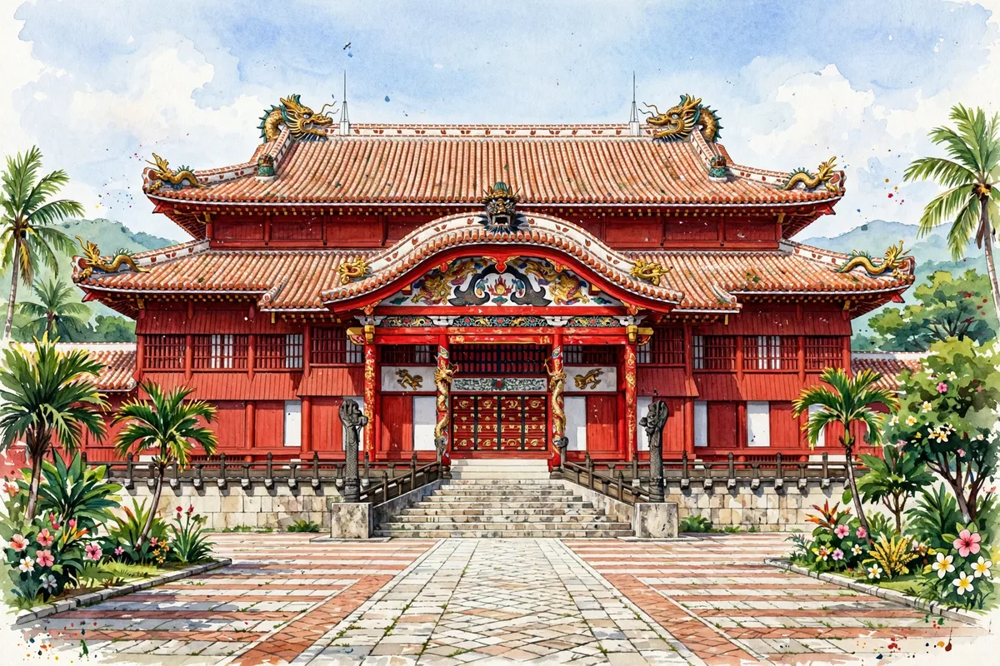
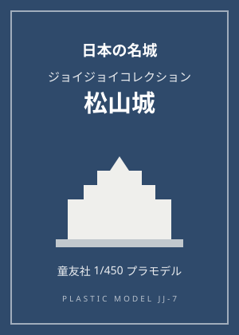

黄色に変わった扁額と33体の龍――首里城正殿、内部を初公開

城と神社にまつわる新しい動きをお伝えするニュース記事です。出典はFNNプライムオンライン（2026年11月16日）と沖縄テレビ（2026年11月16日）です。11月23日の一般公開を前に、復元された首里城正殿の内部が公開されました。11月6日と8日には報道陣へ、15日には地元・首里の住民129人へ、特別に公開されました。
扁額「中山世土」――地板は朱色から黄色に
玉座の上に掲げられる扁額「中山世土」は、今回の復元で大きく姿を変えました。古文書から得た新たな知見をもとに、地板が朱色から黄色（黄土色）に変わり、題字は削り出した文字を貼り付ける「浮彫」の技法が用いられ、より立体的に感じられるようになったといいます。「中山世土」は「琉球は中山の治める世が続きますように」という意味で、中国の皇帝から贈られた書を写したものとされます。平成の復元では地板を朱色にしていましたが、その後に確認された記述から本来の色が判明し、今回の色に改められました。
1階の御差床と2階の御差床――33体の龍が彩る内部
正殿は木造3階建てで、延べ床面積は約1200平方メートルです。1階では国王が政治や儀式を執り行い、2階は王族や女官のための空間で、中国からの使いを迎える場所としても使われました。公開された内部では、1階御差床（うさすか）正面奥の「火焔宝珠（かえんほうじゅ）」や、2階御差床の扁額、柱に描かれた華やかな「金龍五色之雲」などが姿を現しました。首里城を管理する沖縄美ら島財団の比嘉明子学芸員によると、正殿正面の大龍柱や内部の柱に描かれた龍は、正殿全体で計33体あるといいます。
7年の歳月を経て――完成式は11月22日、一般公開は23日から
正殿は2022年11月に工事に着手し、2026年9月末に本体の建築工事を終えました。2019年10月31日の火災で正殿など7棟が全焼してから、約7年の歳月を経ての復元です。11月22日には国主催の完成式が開かれ、23日正午から一般公開が始まります。正殿の内部の観覧には、事前の予約が必要です。
検定の学習ポイントは、首里城正殿の内部と「令和の復元」の特徴です。今回の復元は、1992年に完成した「平成の復元」の基本的な造りを踏襲しつつ、新たな史料や研究成果を反映した点が特徴で、扁額の色の変更や浮彫の技法、久志間切弁柄による深みのある赤などが挙げられます。関連記事「11月23日正午、ついに一般公開――首里城正殿、入場料は大人1,000円・正殿内は日時指定の予約制に」もあわせてどうぞ。
首里城を訪れる際は、首里城公園の公式案内で公開の方法や休園日を確認してください。このサイトのイベント予定表では、11月23日の首里城正殿の一般公開開始も案内しています。
天守つるぎから一言：扁額の黄色も、33体の龍も、7年かけてよみがえった証しだね。23日の公開が、いよいよ目前だよ。
城と神社のニュースや検定の情報は、公式SNSでもお知らせしています。InstagramとThreadsの @tabi.kentei をフォローして、最新情報をチェックしてください。
このテーマの柱ページ：城と神社のイベント予定表｜これからの行事と特別公開
同じテーマの記事：
この記事のおすすめ本

表紙イメージ（実際の表紙とは異なります）
PR 専門書
土の城指南
著者：西股総生
石垣の城だけでなく、土塁と堀で守る中世の「土の城」の歩き方を指南。縄張図の読み方や城跡の見方が身につき、山城歩きがぐっと深くなります。
Amazonで見るKindle版あり／価格はAmazonでご確認ください／リンク先：Amazon.co.jp

パッケージのイメージ（実際の商品とは異なります）
PR プラモデル
童友社 1/450 日本の名城 ジョイジョイコレクション 松山城 プラモデル（JJ-7）
メーカー：童友社（DOYUSHA）
愛媛県松山市の松山城（伊予松山城）を題材にした、童友社のプラモデルです。スケールは1/450で、シリーズ名は「日本の名城 ジョイジョイコレクション」、品番はJJ-7。対象年齢は15歳以上と表示されています。画像はパッケージのイメージです。
Amazonで見る価格はAmazonでご確認ください／リンク先：Amazon.co.jp

表紙イメージ（実際の表紙とは異なります）
PR 入門書
ゼロから分かる！ 図解日本の城入門
著者：小和田泰経
縄張・堀と石垣・天守のしくみまで、イラストでやさしく解説。城めぐり初心者が最初に持つ一冊として、検定の教科書と合わせて読むのにおすすめです。
Amazonで見る価格はAmazonでご確認ください／リンク先：Amazon.co.jp
当サイトは、Amazon.co.jpを宣伝しリンクすることによってサイトが紹介料を獲得できる手段を提供することを目的に設定されたアフィリエイトプログラムである、Amazonアソシエイト・プログラムの参加者です。価格・在庫はリンク先でご確認ください。